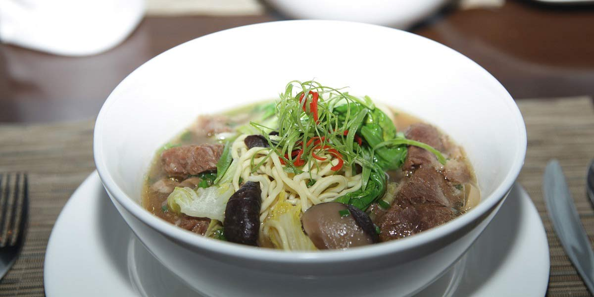

Chicken Noodle Soup
Recipe Specification
Ingredients List
| Ingredients | Quantity |
|---|---|
| Chicken Stock | 4 litres |
| Chicken Breast | 900g |
| Root Ginger | 4 inches |
| Garlic Cloves | 6 Cloves |
| Egg Noodles | 250g |
| Chestnut Mushrooms | 500g |
| Red Chillies | 2x1 |
| Spring Onions | 2 stalks |
| Rice Wine Vinegar | 100ml |
| Dark Soy Sauce | 60ml |
| Bean Sprouts | 200g |
| Red Onion | 2x1 |
| Vegetable Oil | 70ml |
| Coriander | 40g |
| Chinese Five Spice | 1 tsp |
Yield: 10-12 portions
Preparation
- Cut chicken breast into 1 cm thick slices.
- Drizzle oil, salt and pepper on chicken and massage in.
- Peel and grate root ginger.
- Peel and crush garlic cloves.
- Soak Egg noodles for 6 minute in warm water.
- Slice chestnut mushrooms.
- Peel and slice red onion.
- Thinly slice Red chillies.
- Thinly slice spring onion.
- Pick coriander leaves.
Cooking Instructions
- Place a large saucepan over a medium/high heat and add half vegetable oil.
- Fry chicken in batches to a golden brown colour and set aside for later.
- Add the remaining vegetable oil followed by the red onion and cook for 5 minutes.
- Once onions have softened, add half the chillies, crushed garlic, grated ginger and Chines five spice. Sauté ingredients for a further 3 minutes.
- Add sliced chestnut mushrooms and sauté until mushrooms are soft.
- Add chicken to the pan, followed by the chicken stock before bringing to the boil and reducing to the simmer.
- Cook for 10 minutes and the add bean sprouts, egg noodle, rice wine vinegar and dark soy sauce. Season to taste.
- Garnish with sliced red chilli, spring onion and coriander leaves .

Serving Suggestions
This soup is an easy and effective dish to use as a started to any menu.
Storing instructions
Allow to cool to room temperature before placing in an airtight container and placing in the fridge. Consume within 4 days of making it.
Reheating Instructions
Gently bring back up to temperature in saucepan on stove. Alternatively, warm in microwave for 3 minutes, stirring every 1 minute to ensure even warming.